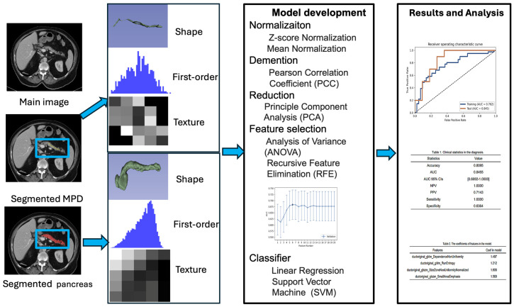

Bio
I am currently a Ph.D. student in the Department of Bioengineering at the University of California, Los Angeles (UCLA), advised by Dr. Debiao Li.
My research focuses on medical image analysis and artificial intelligence, with particular interest in radiomics-based confidence estimation for segmentation and classification, uncertainty quantification, and early pancreatic disease detection.
I am passionate about developing interpretable, trustworthy AI systems for clinical imaging applications, integrating multi-modal radiological data to improve diagnostic reliability.
Publications

Deep Learning with Domain Randomization in Image and Feature Spaces for Abdominal Multiorgan Segmentation on CT and MRI Scans
Radiology: Artificial Intelligence (2025)

Predicting Pancreatic Ductal Adenocarcinoma Occurrence Up to 10 Years in Advance Using Features of the Main Pancreatic Duct in Pre-Diagnostic CT Scans
Cancers (2025)


PLGP: Point Cloud Inpainting with Patch-based Local Geometric Propagating
The Visual Computer (2023)